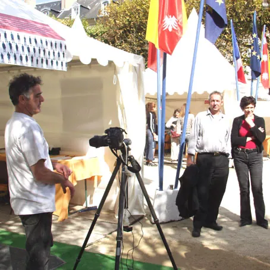
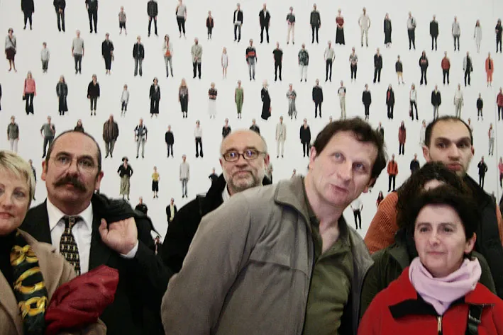
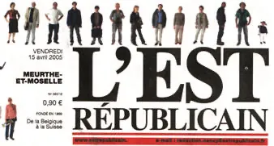

16-19 septembre 2004, place Stanislas16-19 September 2004, Place Stanislas
Portrait d’une villePortrait of a city
Pendant le Livre sur la Place, un studio photo s’installe autour de la place Stanislas. Plus de 1 360 personnes y posent en pied.During the Livre sur la Place book fair, a photo studio was set up around Place Stanislas. More than 1,360 people posed there, full length.
Habitants, public, auteurs, passants, personnes qui vivent ou travaillent autour de la place.Residents, visitors, authors, passers-by, people living or working around the square.
0 portraits en ligneportraits online
Glissez pour parcourir, cliquez sur un portraitDrag to explore, click a portrait
Du studio à la fresqueFrom studio to fresco
Chacun pose seul, en pied, face à l’objectif. Les portraits sont ensuite projetés sur grand écran, puis assemblés en une fresque qui couvre les murs d’une salle de l’exposition de 2005.Each person posed alone, full length, facing the camera. The portraits were then projected on a big screen and assembled into a fresco covering the walls of a room in the 2005 exhibition.
L’ordre des photos est tiré au hasard : une multitude de personnages qui matérialise la densité urbaine, et la place de chacun dans la collectivité.The order of the photos is random: a multitude of figures embodying the density of the city, and each person’s place within the community.
- PhotographiesPhotographs
- Daniel Denise
- AssistantsAssistants
- Laurent Sauval, Michel Fainsilber, Denis Cussenot
- Création musicaleMusic
- Jérôme Bourdellon
- DroitsRights
- © Daniel Denise. Usage familial ou personnel uniquement.© Daniel Denise. Family or personal use only.
À vérifier avant mise en ligne : autorisations de diffusion des portraits sur le nouveau site.To check before going live: permission to publish the portraits on the new site.






Vous vous reconnaissez ?Do you recognise yourself?
Cliquez sur votre portrait ou celui d’un proche : son numéro de fiche s’affiche, et vous pouvez écrire directement à Daniel Denise.Click on your portrait or that of someone close to you: its sheet number appears and you can write directly to Daniel Denise.